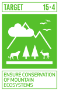

Conservation of mountain ecosystems

Global tools
Red List of Threatened Species and Red List of Ecosystems provide comprehensive assessments of the extinction risk of species and the status of ecosystems. By identifying threatened species and ecosystems, they helps prioritize conservation efforts and informs policy decisions to protect biodiversity (IUCN 2024).
The Global Ecosystem Typology framework categorizes ecosystems based on their functional and structural characteristics (Keith et al. 2022). It aids in understanding ecosystem diversity and resilience, which is essential for developing targeted conservation strategies and monitoring ecosystem health.
Both tools contribute to monitoring progress towards SDG 15.4 by providing data and indicators that track changes in ecosystem health and biodiversity (Nicholson et al. 2024). This information is vital for assessing the effectiveness of conservation measures and making necessary adjustments.
The insights gained from these tools support the integration of ecosystem and biodiversity values into national and local planning, development processes, and poverty reduction strategies (Bland et al. 2019). This ensures that conservation efforts are aligned with sustainable development goals.
By providing standardized data and methodologies, these tools facilitate international cooperation and knowledge sharing.
Status of tropical mountain ecosystems
Red List of Ecosystem assessments in the Americas (Ferrer-Paris et al. 2019), Africa (Keith et al. 2023) and Asia (Murray et al. 2020) highlight the importance of tropical mountain ecosystems for protecting biodiversity. These ecosystems ensure the continued provision of essential ecosystem services that support sustainable development and human well-being. But they are also located in areas of high human impact, where critical threats of climate change and transformation of land use are bringing natural ecosystems to the brink of collapse.
I am specially interested in the fate of tropical glacier ecosystems. These unique cryogenic ecosystemsare disappearing fast from the top of tropical mountains due to the effects of global climate change (Ferrer-Paris et al. 2024; Ferrer-Paris and Keith 2024).
Unique fauna in the Andes
Tropical mountain ecosystems are rich in biodiversity, hosting numerous endemic species that are not found anywhere else. This biodiversity is crucial for maintaining ecological balance and resilience.
My work includes contributions to the study of the spectacled Bear, also known as the Andean bear, it is the only bear species native to South America. (Sánchez-Mercado et al. 2008; Sánchez-Mercado et al. 2014).
I also worked in the Venezuelan páramos, high-altitude ecosystems home to a variety of unique and endemic butterfly species. These butterflies have adapted to the specific climatic and physical conditions of the páramo, which include cold temperatures and high UV radiation.
I contributed to the description of new species and the study of the ecology and behaviour of species in the genus Redonda and Steromapedaliodes, endemic to the Cordillera de Mérida in Venezuela (Viloria et al. 2003; Viloria et al. 2015).
These butterflies are part of the Nymphalidae family, specifically within the subtribe Pronophilina, which is known for its adaptation to high-altitude environments.
The diversity and specialization of these butterflies highlight the ecological importance of the Venezuelan páramos and the need for their conservation.
Check my contributions to other targets!